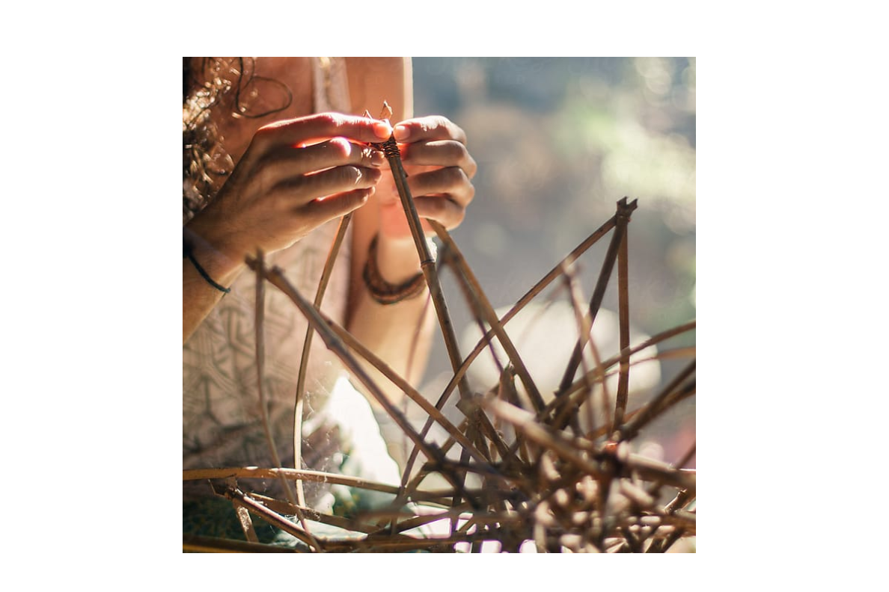
The Aral Sea is a place where all the most urgent concerns of today come together. Soil, water, energy, food, textiles and air quality – it can be seen as the live laboratory of the future and can help us rethink what's possible for many generations to come.
We are pleased to announce the Aral School, the new education programme beginning in 2026, led by Jan Boelen and commissioned by the Uzbekistan Art and Culture Development Foundation.
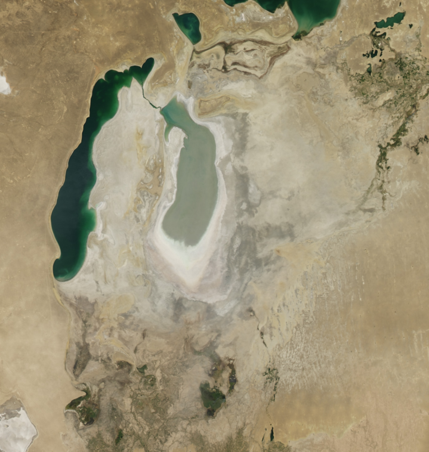
The climate crisis is leaving an indelible mark on our ecosystems and bioregions, forcing us to rethink our interdependencies and alliances. North Uzbekistan and the Karakalpakstan area were once home to the vast Aral Sea, a lake in Central Asia that was for most of the 20th century the world's fourth largest saline lake. In the last fifty years, the lake has dramatically dried up, with a radical increase in salinisation, primarily due to unsustainable irrigation practices linked to intensive, large-scale cotton cultivation. The consequences have irreversibly altered a bioregion and caused the collapse of an ecosystem, with serious impact on local communities and the region's ecology, economy, culture, and public health.
The Aral School is an interdisciplinary postgraduate programme that recognises the unique characteristics of this context, as well as the dramatic consequences of this ecosystem's collapse. In a lucid approach, the school takes these as the starting point to create new and sustainable visions and prototypes for a shared future. The programme brings together international and local participants from Uzbekistan and Karakalpakstan to explore innovative solutions for cultural and ecological regeneration. Learning from the traditions, biocultural context, and environmental pressure of the Karakalpakstan region, the programme fosters new ways of learning and collaborating across disciplines.
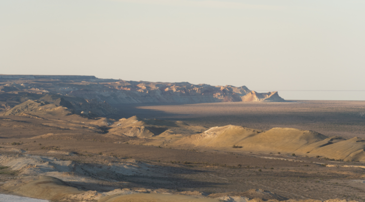
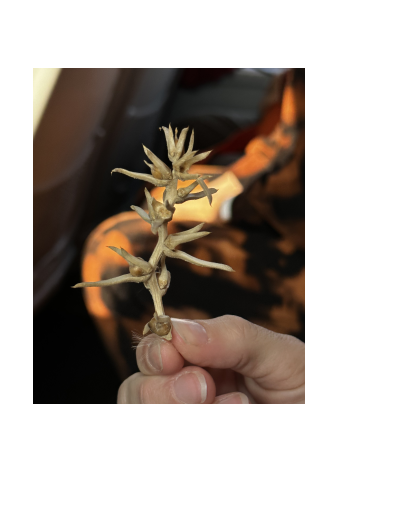
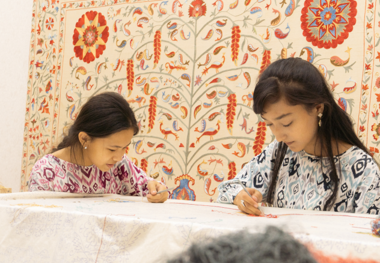
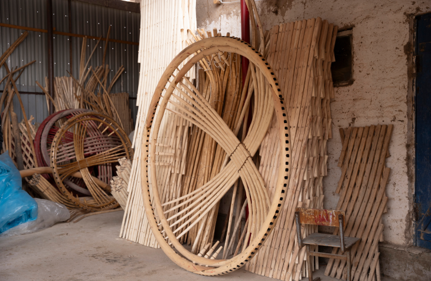
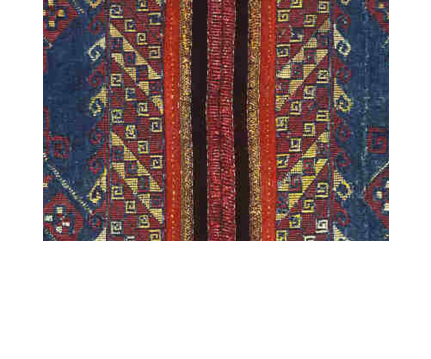
The two first themes of the Aral School Pilot examine food and water. Two interconnected research topics that are influencing the way we produce and consume food, our livelihood and global biodiversity. We need to develop and speculate new strategies and design new systems to prototype possible futures in order to inspire, building hope. The topics are at the same time our alibi and point of departure to introduce holistic eco-systemic projects that would build a new bioregion from molecular to bioregional scale.
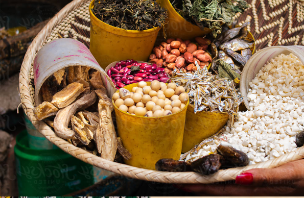
When ecological systems are changing or collapsing, agriculture needs to adapt. What kind of sustainable food systems in Karakalpakstan and the Aral Sea region at a larger scale can we develop? New agroecological approach in the city of Nukus and beyond will be explored and developed, creating a sustainable framework for a resilient and equitable future.
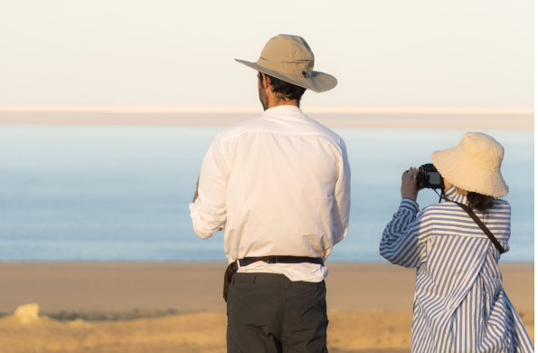
In the region where water evaporated by human activities we want to bring back water in everyday life to increase the quality of life. As a new benchmark for the water ecosystem, this theme explores new opportunities, partnerships, tools and collaborations that will elevate the most precious source of. Reshaping the future of the region through new water ethics, and principles of the bioregional design.
Design prototypes connected to the core themes developed within the research groups.
Media publication capturing the process, key research questions and prototype solutions will be published within 2026.
First ideas will be shared with the global creative public during Milan Design Week 2026 and Aral Culture Summit 2026, additional cultural outposts for the prototypes exhibition might also take place.
Key research outcomes and ideas will be shared in an exhibition and publication during the second Aral Culture Summit in October 2026 as part of the programme.
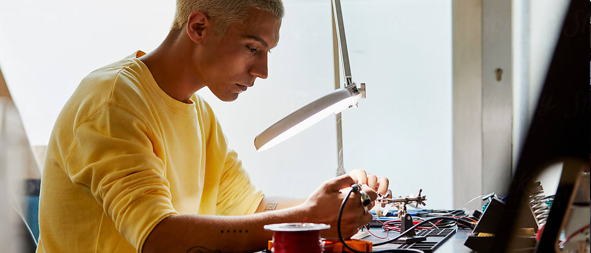
The multidisciplinary programme is aimed at young professionals from Uzbekistan and abroad with varied backgrounds and work experience in the fields of architecture, urbanism, environmental science, biotech, climate studies, filmmaking, media, crafts, design, computer technologies, social studies, physical sciences, and other fields.
It is recommended that applicants to the programme have a higher education diploma (in any specialisation) and no less than 2-3 years of work experience.
When reviewing applications, we focus on how potential researchers could apply their expertise to the research agenda of the programme and current theme.
Upon applications and portfolio review, selected candidates will be invited for a creative interview session to share their areas of interests and motivations.
Please submit the following documents together with your application:
Please note, only fully completed applications as per the list above will be considered.
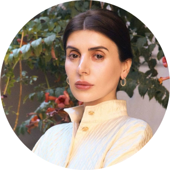
Project Chair
Gayane Umerova is dedicated to developing the culture sector in Uzbekistan.
Head of the Department of Creative Economy and Tourism of the Administration of the President of the Republic of Uzbekistan and Chairperson of the Uzbekistan Art and Culture Development Foundation (ACDF), Gayane Umerova is at the helm of building Uzbekistan's cultural infrastructure. Her efforts are bringing the nation's art, artists, and cultural heritage into the global spotlight. Currently, she is overseeing the restoration and development of the Centre for Contemporary Arts in Tashkent, poised to become a new cultural hub for the region, and is the commissioner of the Bukhara Biennial (5 September - 20 November 2025). She has spearheaded the inaugural Aral Culture Summit (April 4-6, 2025); is driving the construction of the new Uzbekistan National Museum designed by Tadao Ando and is leading the forthcoming 43rd session of the UNESCO General Conference that will take place in Samarkand on 30 October - 13 November 2025. She is the commissioner for the Uzbekistan Pavilion at the Venice Biennale Arte and Architettura since 2021 as well as for Uzbekistan's participation in Expo 2025 Osaka, among other significant projects.
Committed to boosting Uzbekistan's prominence on the international culture scene, Umerova serves as the Chairperson of the National Commission of Uzbekistan on UNESCO Affairs under the Cabinet of Ministers and in April 2025 has been awarded France's Order of Arts and Literature. Her public service commitment is evident in her dedication to creating opportunities for young people in Uzbekistan's cultural sector and fostering a cultural economy that unites communities and generations.
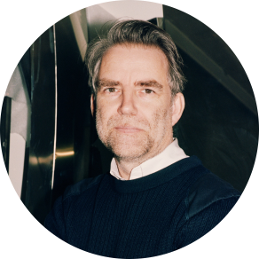
Program Director
Jan Boelen is a curator of design, architecture, and contemporary art. He is the artistic director of Atelier LUMA, an experimental laboratory for design in Arles, France. Boelen studied Product Design at Genk and is the founder and former artistic director of Z33 - House for contemporary art in Hasselt, Belgium. He was founder of the Master Social design at the Design Academy of Eindhoven till 2020 and Rektor of the Karlsruhe University of Arts and Design from 2019 till 2023. In 2014 he curated BIO50, the design biennial of Ljubljana in Slovenia. He was curator of the 4th Istanbul Design Biennial in Istanbul (2018) and initiated Manifesta 9 in Belgium (2012). Lastly, Boelen curated the Lithuanian Pavilion Planet of People in the Venice Architecture Biennial (2021).
Over the years he has been fashioning projects and exhibitions that encourage the visitor to look at everyday objects in a novel manner.
Boelen recently edited Social Matter, Social Design: For Good or Bad, all Design is Social (Valiz, 2020), and Muller Van Severen: Dialogue (Walther Koenig, 2021) and Atelier Luma, Bioregional design practices (Luma, 2023). His writing addresses the implications of design in everyday life and how artistic practices can shape the discipline.
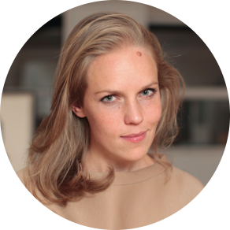
Program Lead
Ksenia is a design curator and creative strategist with a focus on circular innovations and regenerative place making. London School of Economics and Stanford graduate, she brings over 15 years of creative leadership and programme management across a variety of impact-driven brands, sectors and organisations. A journalist by background, she gradually centered her thinking at the intersection of science, design & new technologies, leading one of WPP design & innovation practices in London and NYC.
Her subsequent brand leadership of the iconic Design Hotels platform allowed for a greater focus on the topics of Community, Impact & Sustainability and led to her authorship of the first Regenerative Placemaking framework in Travel, widely adopted by the industry since then across the globe.
Driven by her interests in sustainable design practices, Ksenia now runs her own design studio, working with impact and climate-driven ventures and organisations on their content, programming and community initiatives.
She is also a curator of the largest climate tech festival in the UK, The Heat, and is focused on supporting a diverse range of pioneering bio design innovations in Fashion, Design and Architecture as part of it.
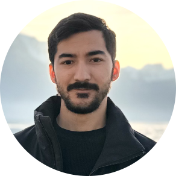
Project Manager
Khudoyorkhon Abdujabborov is a project manager at the Aral School, responsible for coordinating partnerships, exhibitions, and local implementation across Karakalpakstan. He brings extensive experience in international cultural collaboration, having managed key initiatives for the Uzbekistan Art and Culture Development Foundation, including the exhibition "A Glimpse Through Time: The Legacy of Khudaybergen Devanov" at UNESCO in Paris and the redevelopment of the permanent collection at the State Museum of Arts named after I.V. Savitsky in Nukus. Prior to this, he worked in diplomatic and cultural roles at the Embassy of Poland in Uzbekistan and the El-Yurt Umidi Foundation. He holds a degree in International Relations from Kazan Federal University and is also a laureate of an international circus arts festival, with performance experience in Uzbekistan, Mexico, and the USA.
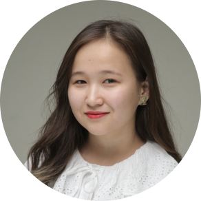
Local Coordinator
Gulnara Joldasbaeva is a cultural producer, educator, and local coordinator of the Aral Culture Summit in Karakalpakstan. She curates interdisciplinary events connecting ecology, heritage, and contemporary art. As part of the School, she brings together artists, scientists, and community members to reflect on the Aral Sea crisis through creative formats. In partnership with UNDP, she also launched Bilim, a platform offering programming and language education to young women in underrepresented communities. Her experience in ecological education and local cultural engagement makes her an essential link between artistic content and regional relevance.
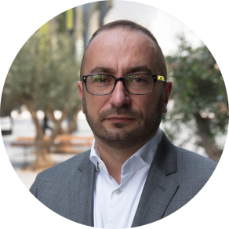
Advisor
Cyril Zammit is an independent advisor and design consultant, with a career devoted to supporting cultural and creative initiatives across the Middle East and Central Asia.
He began his professional journey at the Institut Français in Prague, followed by a role at the Cultural Department of the French Embassy in London. He later moved to Switzerland, where he oversaw international sponsorship for the Montreux Jazz Festival, before taking on cultural sponsorship roles at UBS and HSBC Private Bank.
In 2009, Cyril relocated to the UAE, where he played a key role in launching Abu Dhabi Art, and went on to establish Design Days Dubai and Dubai Design Week. He later served as an advisor to Dubai Culture & Arts Authority, and subsequently joined the UAE Ministry of Foreign Affairs & International Cooperation as a Cultural Affairs Expert in the Office of Public and Cultural Diplomacy.
Since March 2022, he has been advising the Uzbekistan Art and Culture Development Foundation. In 2023, he also became an advisor to L'ÉCOLE Middle East in Dubai and was appointed Design Consultant to the Royal Commission for AlUla. Cyril is also a regular design columnist for Esquire Middle East.
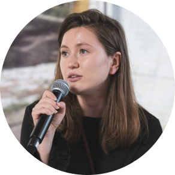
Research & Development
Anastasia Sinitsyna is a researcher and cultural consultant working at the intersection of environmental humanities, design, and education. She is currently based in Venice, Italy, where she coordinates international exhibitions and cultural initiatives, including the Spanish (2023) and Uzbekistan (2022-2025) National Pavilions at the Venice Biennale. Her work focuses on ecological transformation, sustainable futures, and the role of art and education in reimagining cultural and physical landscapes.
Anastasia also leads research and programming for the Aral Culture Summit, a long-term initiative of ACDF aimed at supporting biocultural diversity and ecological regeneration in Karakalpakstan and the broader Aral Sea region.
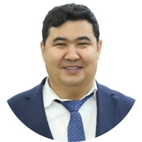
Sagitjan has a profound experience in the field of complex projects management with technical expertise in programs planning, management, monitoring and evaluation, community empowerment, employment and business support. He has been engaged in a wide range of development, programming and implementation processes of UN programmes for the last 20 years both at national and international level.
Sagitjan worked as WASH Officer for UNICEF Country Office in Uzbekistan by managing several UN Joint Programmes in Karakalpakstan, focused on improving access to safe drinking water in remote communities of Karakalpakstan, improving WASH facilities in 25 schools and 36 healthcare facilities and the revision of WASH hardware and software standards (2021-2025).
He was also the Project Manager for UNDP Uzbekistan "Promoting Youth Employment in Uzbekistan" on managing youth employment and entrepreneurial skills development. He was also a Team Leader on Social Services/ Monitoring & Evaluation for several UN Joint Programmes in Aral Sea region (2013-2014; 2016-2019).
At International level, Sagitjan served as Planning, Monitoring and Evaluation Officer for UN Liberia Resident Coordinator's Office, where he was engaged in coordination of 16 UN agencies during the EVD outbreak (2014-2016).
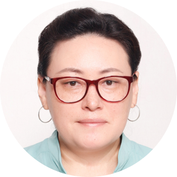
Elena Kan is the director of a young NGO "KIVA Center" dedicated to advancing sustainable development by integrating science, education, research, production, and agribusiness - one of the few civil society organizations of its kind in the Aral Sea region.
With a background in language studies and ecology, Elena has built extensive experience in capacity building for efficient land and water use in agriculture. Among her current engagements is the promotion of effective production and export of alternative, low-resource oilseed crops among farmers and agripreneurs. Elena also collaborates with protected areas to enhance their educational programs and eco-tourism capacities through non-formal learning on natural resource conservation and fostering civic activism for environmental protection. She strives to drive positive changes in both urban and rural areas, contributing to nature conservation and the resilience of local ecosystems and communities through education and collaboration.
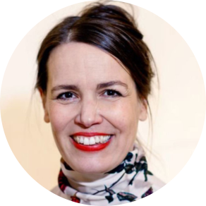
Eva is a passionate practitioner and frequent key-note speaker who thrives working in complex and fast developing environments with public sector and cultural clients, focused on the benefits for society and the natural environment. She co-founded OOZE architects; urbanists with her partner Sylvain Hartenberg in Rotterdam. "OOZE is championing a culture of innovation, inclusion and integration: radical system thinkers and doers, passionate collaborators leaving no one behind, and catalysts' designers that foster innovative interventions for real change, from the smallest community to the world" (quote Henk Ovink, 2025). Eva specializes in urban strategies, blue-green infrastructure and bankable concept developments that mitigate and adapt to climate change impacts with Nature-based and Culture-based solutions.
For the Dutch Water as Leverage programme, she is the team lead for the CITY OF 1000 TANKS alliance in Chennai, developing a water balance model across the city to make the most inclusive, efficient and economic use of water locally. Água Carioca, an urban circulatory system for Brazil, received the Holcim Prize for Sustainable Development. As co-curator and lead designer for the International Architecture Biennial Rotterdam (IABR) Eva and her team developed a neighbourhood energy transition model prioritizing community ownership, multi-scalar benefits, and actionable implementation frameworks.
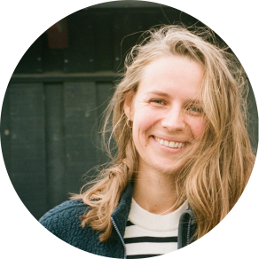
Michelle is a Danish economic geographer, policy advisor, and project manager with a strong focus on sustainable agri-food systems and agroecological transformations. She hold an MSc in Geography with a specialization in socio-economic transformations, and have extensive experience working across civil society, research, and practice.
She currently work as a food policy advisor at the Danish environmental NGO Rådet for Grøn Omstilling (Green Transition Denmark), where she develops and leads projects at the intersection of policy, sustainability, and agriculture, including ecological economics, seed sovereignty, and grassroots innovation in food and farming systems.
Her professional background spans research, advisory, and editorial roles across multiple countries and contexts. She co-founded interdisciplinary platforms (e.g. The Preserve Journal, KOMPOST Studio), all dedicated to the exploration and celebration of sustainable food culture, place-based knowledge, and transformative storytelling. She is deeply engaged in regional innovation networks and participatory learning formats, with a particular interest in the regeneration and revitalisation of rural landscapes, practices, and communities.
Details will be provided regarding specific tuitions and grant schedules during the application phases.
This programme focuses on practical engagements; specific certifications details will be clarified.
Yes, cross-disciplinary practitioners are firmly encouraged to participate and form novel teams.
Yes, localized housing infrastructure exists for fully accepted candidate cohorts.
Travel, personal effects, and individual project budgets may require supplemental alignment.
The working language of the programme is English; all workshops and projects are run in English, so fluency in English is essential. Please expect a high working pace and numerous global experts sharing their insights, you need to be able to exchange in English fluently on a daily basis and participate in weekly creative dialogues.
Physical presence is mandated during major curriculum tracks due to place-based design methodologies.
The primary iterations demand intense full-time immersion into the community architectures.
Extensive asynchronous work may be maintained, provided synchronous commitments are prioritized.
Consult our programme dossier online or reach out via the provided organizational emails.
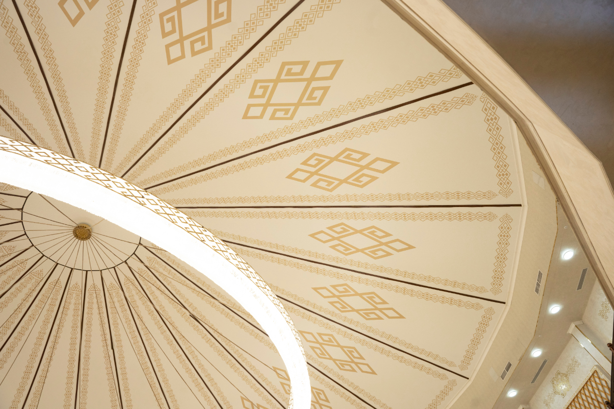
The Aral School is an initiative of the Uzbekistan Art and Culture Development Foundation (ACDF).
The Uzbekistan Art and Culture Development Foundation (ACDF) preserves, promotes and nurtures Uzbekistan's heritage, arts and culture. Positioned at the forefront of Uzbekistan's cultural development, ACDF is committed to fostering the cultural ecosystem of the country, driving the creative economy, and providing opportunities for practitioners on a local, regional and global stage. ACDF believes that culture and heritage are vital in shaping society, uniting communities, bridging generations, and facilitating cross-cultural conversations.
ACDF has successfully led the fourth edition of the World Conference on Creative Economy (WCCE) (2-4 October 2024) in Tashkent and the inaugural Aral Culture Summit (4-6 April 2025) in Nukus, Karakalpakstan. The Foundation currently spearheads Uzbekistan's participation in Expo 2025 Osaka, Kansai, Japan (April – October 2025), the revitalisation of the Centre for Contemporary Arts in Tashkent, the construction of the new National Museum of Uzbekistan designed by Tadao Ando, and the restoration and partial reconstruction of the Palace of the Grand Duke of Romanov. ACDF has also launched "Tashkent Modernism XX/XXI", an ongoing research project documenting and protecting the city's modernist architecture, highlighted by two significant publications in collaboration with Rizzoli New York (published in November 2024) and Lars Müller Publishers (published in May 2025). In Bukhara, ACDF is launching the first Bukhara Biennial in September 2025. In Samarkand, ACDF will host the forthcoming 43rd session of the UNESCO General Conference (30 October - 13 November 2025).
To date, ACDF has reached over 3.5 million visitors through landmark exhibitions across 17 countries: from the Louvre and Arab World Institute in Paris to the Uffizi in Florence, the British Museum in London, and the Palace Museum in Beijing. With projects presented across Europe, Asia, and the Gulf, and collaborations with over 40 international museums and cultural institutions, the Foundation is amplifying Uzbek voices and stories in the world's most influential cultural arenas.